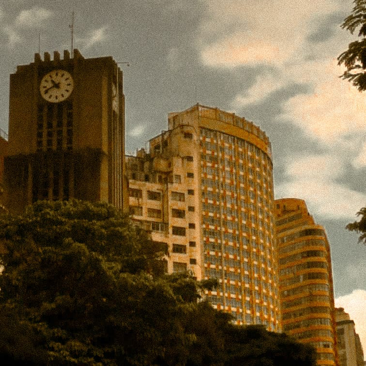

Antes de eu entender o que significava se jogar no mundo, eu tive que mentir pra dar umas escapadas. Minha primeira viagem sozinha é um segredo pra minha família. Eu não contei para meus pais; disse pra eles que eu tava indo pra Uberlândia olhar uns apartamentos. Pra minha avó, disse que era uma viagem da escola. A verdade? Decidi que ia para o Nacional de Batalha de Rima em Belo Horizonte. Era dezembro de 2023, eu tinha pouco dinheiro, nenhuma companhia, não tinha lugar pra ficar, mas eu tinha muita força de vontade.
Na noite antes do evento, eu fiquei na casa de uma amiga em Uberlândia, que era de onde eu iria embarcar.
Assim que entrei no ônibus, reparei num cara que parecia estar indo para o mesmo lugar que eu. Perguntei pra ele se ele também tava indo para o Nacional, e adivinha?
A gente começou a conversar e eu disse que precisava de um lugar pra deixar minha mala e me arrumar. Ele não tinha lugar então decidimos procurar por um assim que chegassémos.